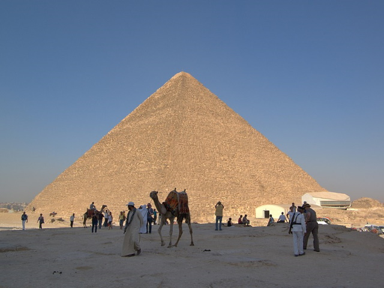
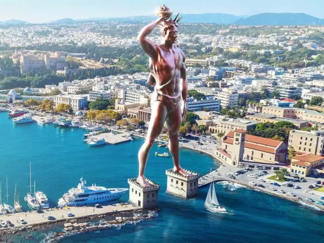
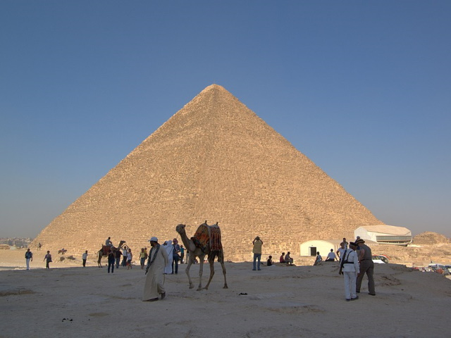
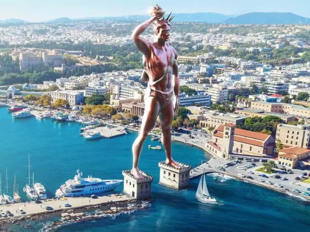
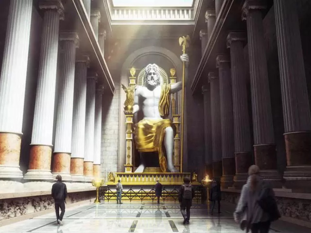
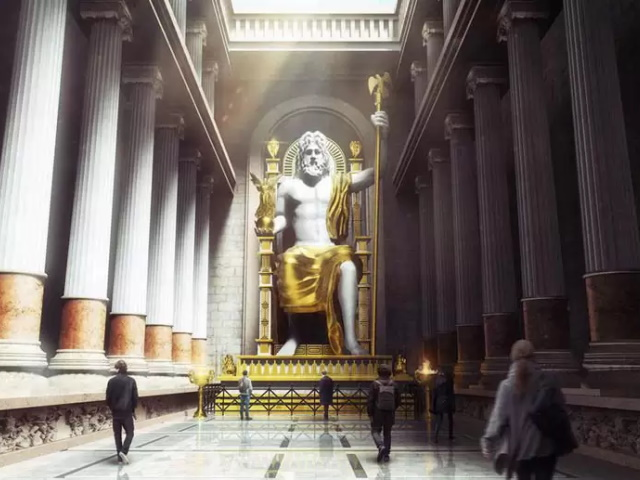

Седам светских чуда
Седам светских чуда старог света је скуп архитектонских дела које су стари Грци, нарочито у хеленистичкој епохи, сматрали врхунцем људске креативности и генијалности. Међутим, од ових седам чуда још само комплекс великих пирамида у Гизи и дан данас постоји.

 



 
